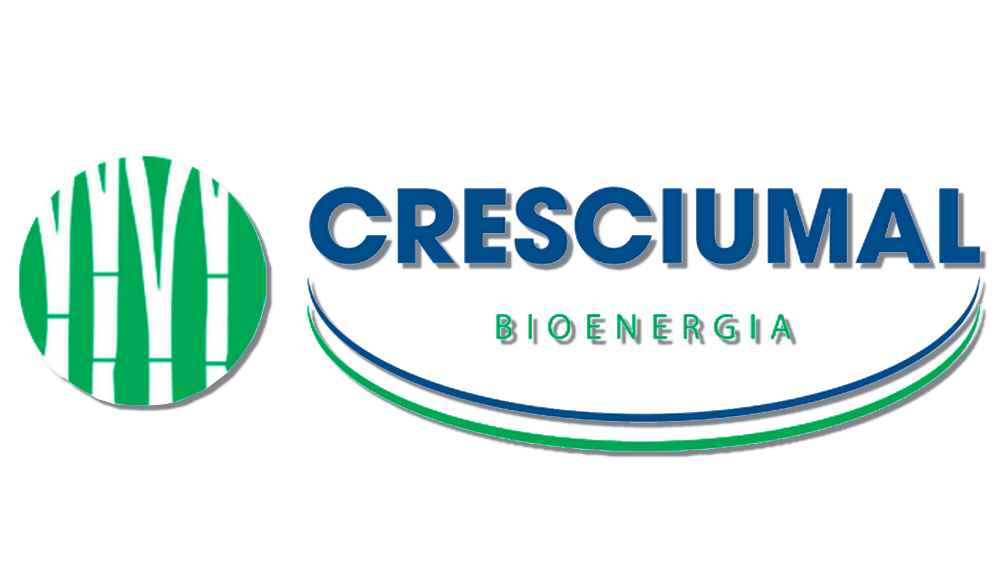

RELATÓRIO DE APLICAÇÃO
Identificação
-
Dados Climáticos
Resultados
-
40 m
Use o KML do talhão para preencher a área automaticamente. Carregue o KML de pontos/linhas separadamente para exibir o trajeto.